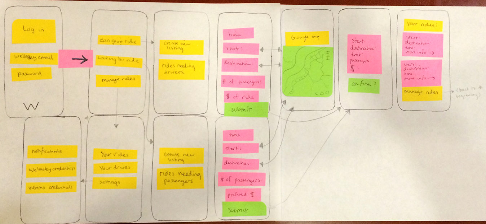
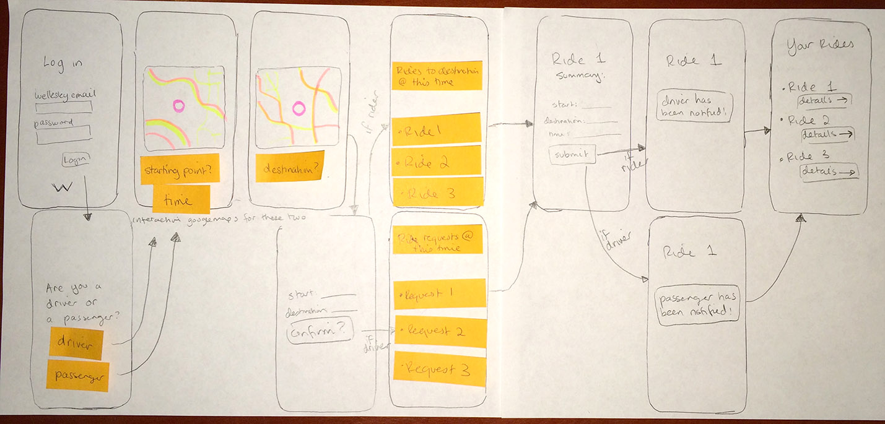
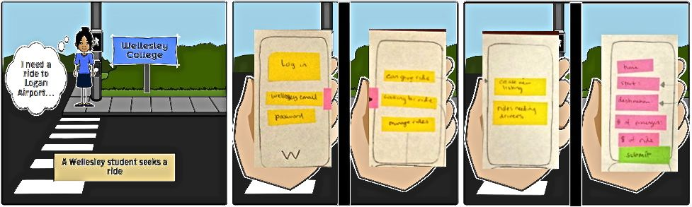
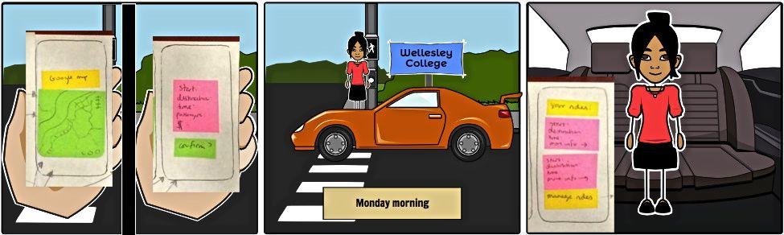
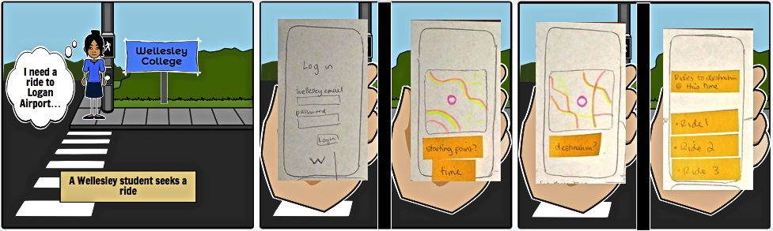
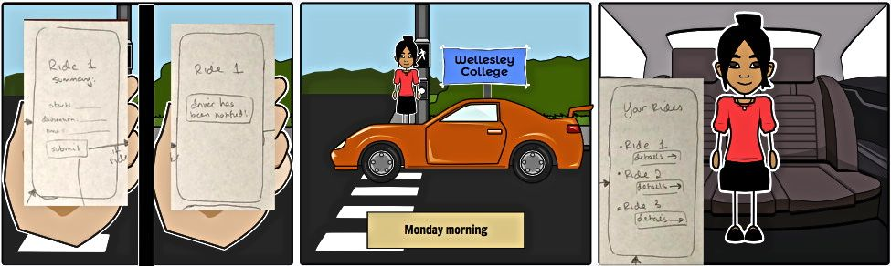

Scenarios
Asking for a ride (in advance):
As a high school senior on the Wellesley College Class of 2016 page, Careful Casey was the one who posted about being a "Potential Econ/CS/Math triple major, I want to go abroad to France for a year!" after seriously looking at the feasibility after trawling every major requirement page. This couldn't actually happen, her APT told her, so she decided to prove her wrong by making five "FOUR YEAR PLANS" that entailed every extracurricular activity and major/minor combination she was going to fulfill from first-year to senior year-- even accounting for the alternate year major requirement courses. With Spring Break approaching, the thought of getting to and from the airport to maximize problem-set time consumed her worries, so Casey had posted about getting a ride to the airport back in February. Every day until spring break she had to locate the spreadsheet from an email that Sravanti '16 sent out during the last round of airport frenzied emails to see if someone could give her a ride. No one contacted her, but thankfully, a friend told her about Shride, a new campus ride share app. Only Wellesley students could use it, a safer version of Uber or Lyft. One week before spring break, she opened the app and clicked "Needs a ride." She posted her trip information, "Coming from: Lulu Campus Center, Destination: Boston Logan, Time: 5:00pm (can do earlier), Luggage: 1 piece" and closed the app and waited. One day later, she received an SMS that Driver Devon could pick her up and a number she could text. Casey sighed in relief, and quickly resumed burying herself into her piles of work--with her careful planning, she'd finish all her problem sets before leaving campus.Giving a ride:
Driver Devon brought her car to campus last summer so that she could commute from volunteer work and school seamlessly without being burdened by the Peter Pan bus. Home was a quick 20 minutes away, so she also used it to visit every week. She didn't really need her car for herself though, and had a very low need to drive herself to the airport, so every time a break rolled around, she would post her availability on Facebook and receive dozens of requests for rides. It was really difficult to organize these; charging $20 per person for a ride in addition to optimizing gas usage gave her a headache. Driver Devon then received an email from the creators of Shride, asking if she could try it out. It was pretty simple; she just had to click "Can give a ride" and the rides that needed people were organized by destination, and could even be filtered by time. Price negotiation was done via text, and money was easily transferred via Venmo. Devon was impressed. After 1 break's worth of drives, she made a 200% increase in driving profits.Joining a ride (in the moment):
Typical Terry likes to go out sometimes. When the Peter Pan fails to come, she doesn't think too hard about calling a car from a rideshare app. She constantly had one of the 50% off your first ride coupon codes at hand, but one day, she ran out. She still ended up calling the car since it was 2am and she was getting cold waiting in Cambridge, but she had to pay 100 dollars to get back to campus due to Uber's surge pricing on that Friday night. Looking at the bill, she had a single thought: "Yikes." She tweeted about this incident, and Careful Casey quickly DM'd her a link to try out Shride, the campus ride share app that connected student drivers with students at affordable (read: negotiated) prices. Her next venture out, Peter Pan failed yet again to show up. It was 11pm on a Sunday night and she was by MIT. Terry was upset and commiserated loudly with fellow Wellesley students who bemoaned the cost they'd have to incur from using rideshare apps. She then remembered that she could use Shride. Quickly queuing up Shride, she saw that someone had already called a ride in Central Square back to campus that had three seats left. She clicked "Join ride" and received an SMS telling her the Driver Devon's name and a number she could text. She called and asked if Driver Devon could swing by Kendall Square, and thankfully, it wasn't too much of a detour, and thankfully even without cash, Terry could pay with Venmo. It all worked out, and Terry felt a little better about the world.Preliminary Designs


Storyboards
Preliminary Design #1


Preliminary Design #2
